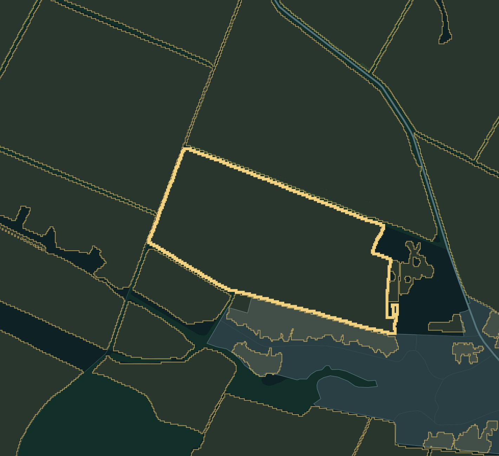
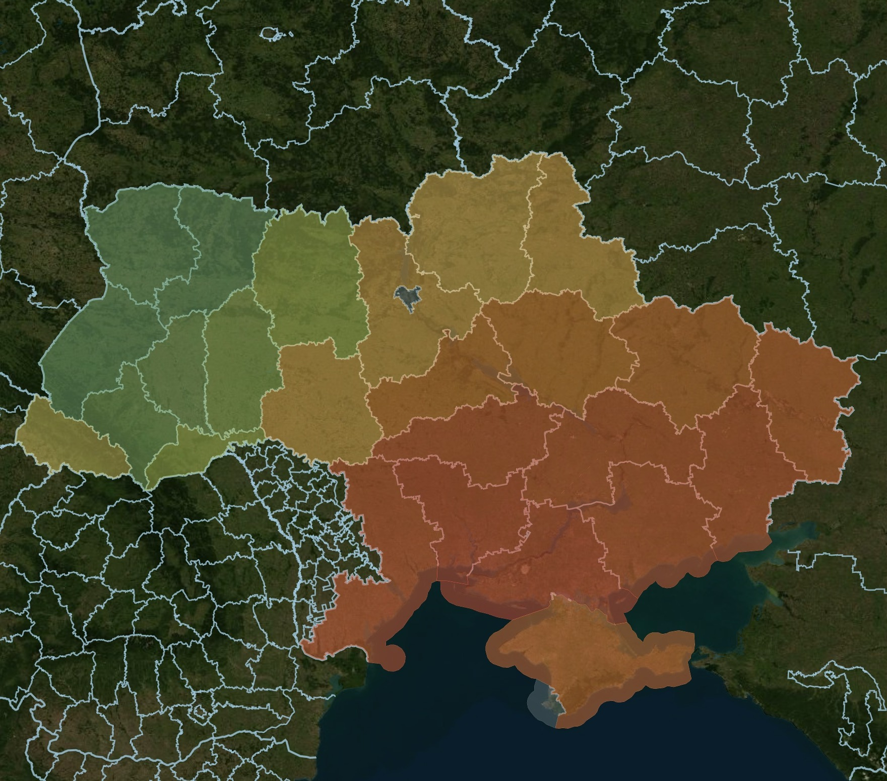
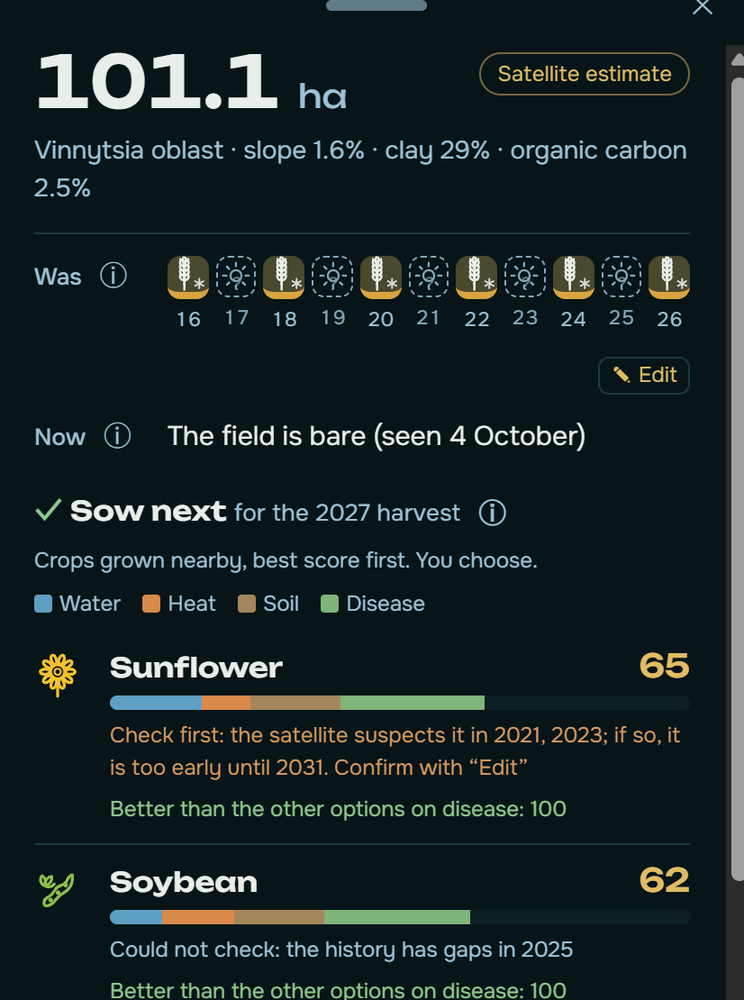
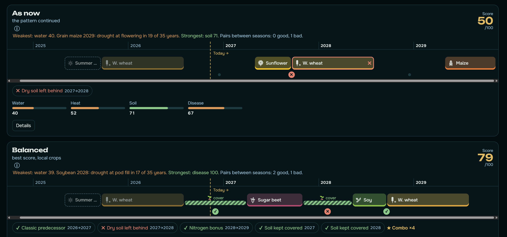
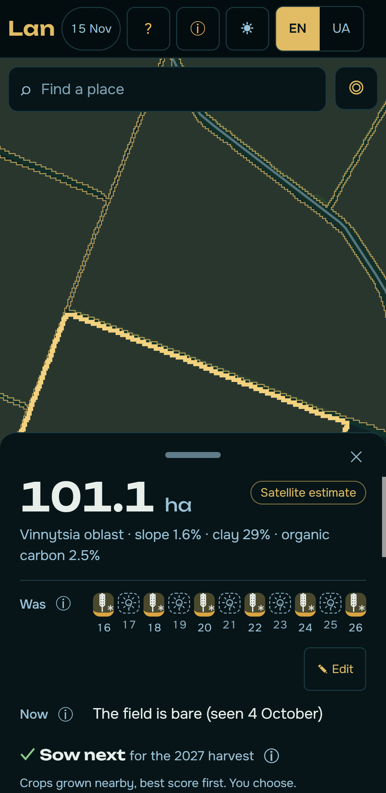

Crop rotation planning for any field, from NASA satellite data.

Sunflower sown back too soon brings disease and dry soil for several seasons.
Advice usually comes from regional averages, not from what this field grew or how dry its summers have become.
Lan's drought layer: summers out of the last 20 with a July water balance below −150 mm, from NASA POWER.
Eleven harvest years read from NASA HLS. An ear marks a winter crop, a sun a summer crop. Dashed tiles are uncertain, and the farmer can correct any year.
Crops grown nearby, scored 0–100 on water, heat, soil and disease. The farmer chooses.
Where the history has gaps, the card says what to check before sowing.

1 2 3NASA HLS imagery, 30 m, every 10 days since 2016. A classifier reads each season's greenness curve: winter crop, summer crop or bare.
NASA POWER: 35 years of daily weather for the field's cell. Slope from NASADEM, soil from SoilGrids.
Return intervals, good and bad predecessors, sowing windows from the cell's own temperatures. Every rule shows its source.
As now: the field's own pattern, continued from today.
Wheat after sunflower leaves dry soil: marked as a bad pair.
Balanced: the best plan from local crops, 79 of 100.

1 2 3of 24,626 held-out field-seasons in Cherkasy match independent crop maps (KPI / World Bank, 2019–2024).
Bare fields are often missed (F1 0.22). Crop names are shown only as hints: trained on one year, they drift in drought years. Weather is per 50 km cell, soil per 250 m.
No install, no account. Start with the demo field and the one-minute guide.
Maps ready today: Ukraine and the 48 contiguous US states.
Best on a computer: comparing rotations. Field cards work on a phone too.
Code under the MIT licence: github.com/nazariipolishchuk/lan
Team Lan. Code and text drafts were written with an SI coding assistant (Claude Code); the idea and product decisions are the team's.
